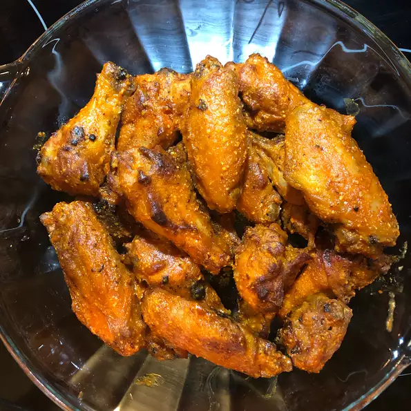

Hot Wings

Description
We all love hot wings! This is a very spicy hot wing recipe.
Jalopeno and habernero based, this recipe will surely have
you sweating and longing for more!
Ingredients
- 4 lbs. chicken wings
- 1 teaspoon garlic powder
- 1/2 teaspoon ground black pepper
- 1 cup tomato-based hot pepper sauce
- 2 tablespoons vinegar-based hot pepper sauce
- 1 teaspoon garlic powder
- 1/4 cup grated parmesean cheese
- 3 tablespoons butter, melted
Steps
- Preheat an outdoor or indoor grill to a high heat.
Lightly grease the grill.
- Season wings with garlic powder and ground black pepper.
Cook wings on the preheated grill until they are very crispy.
Turn the wings frequently as they will burn easily.
- While the wings are grilling, in a large bowl,
combine both hot sauces with garlic powder,
Parmesan cheese and melted butter.
- When the wings are finished cooking,
place them in the large bowl of hot sauce mixture and stir until they are coated.